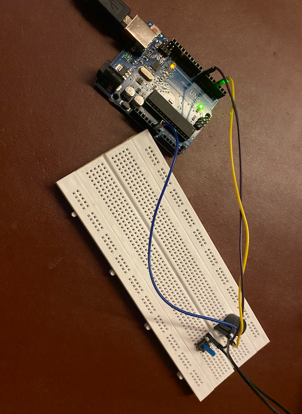
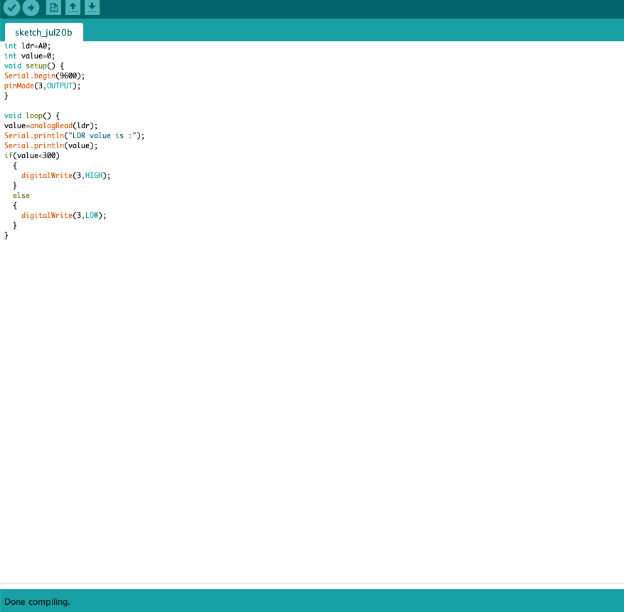
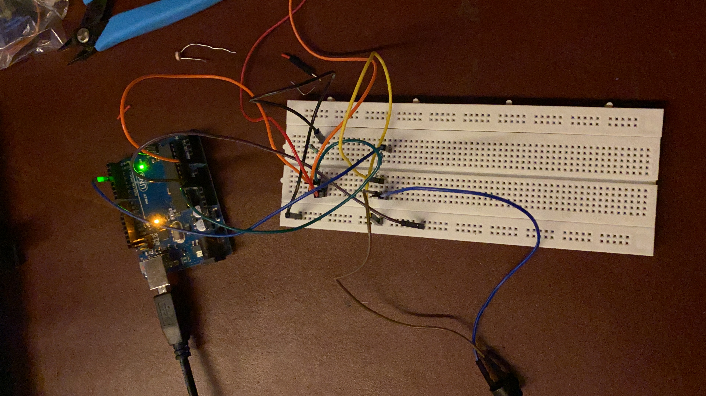

Assignment:
1. Use an output device that you haven't used before.
2. Write a microcontroller program that integrates at least one input device and one output device. Avoid the delay() function by using either timers or interrupts.
For the first assignment I used a buzzer as an ouput. Controlling it without any input device and also controlling it with a button switch.
I have attaached the photo of the following
1. Circuit
2. Tinkercad
3. Video
4. code for copy paste
I used a button switch as an input device.
Photo of the circuit:

Video of the circuit:
For the second assignment I programmed a microcontroller for a circuit with LDR as an input device and an LED as an output device. This program will basically allow the led to glow when the LDR input level increases. This can also be used as an security measure. You will understand more by the photos below. I know we only had to make a program but I went ahead and also made a circuit.
Screenshot of the code:

Code for copy paste:
int ldr=A0;//Set A0(Analog Input) for LDR.
int value=0;
void setup() {
Serial.begin(9600);
pinMode(3,OUTPUT);
}
void loop() {
value=analogRead(ldr);//Reads the Value of LDR(light).
Serial.println("LDR value is :");//Prints the value of LDR to Serial Monitor.
Serial.println(value);
if(value<300)
{
digitalWrite(3,HIGH);//Makes the LED glow in Dark.
}
else
{
digitalWrite(3,LOW);//Turns the LED OFF in Light.
}
}
Photo of the circuit:

Screenshot of the serial monitor when there is no light:
Screenshot of the serial monitor when there is light:
Video: